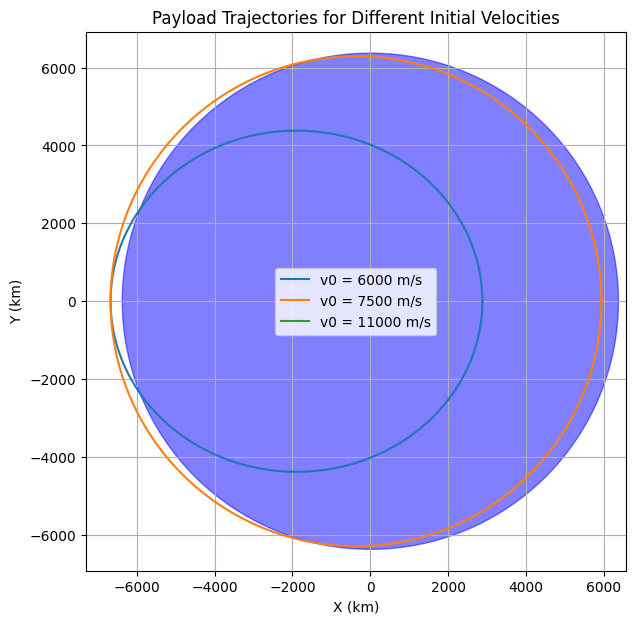
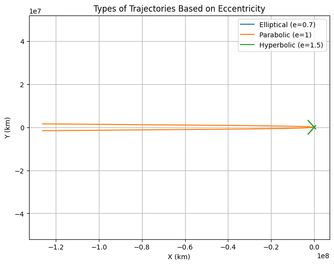
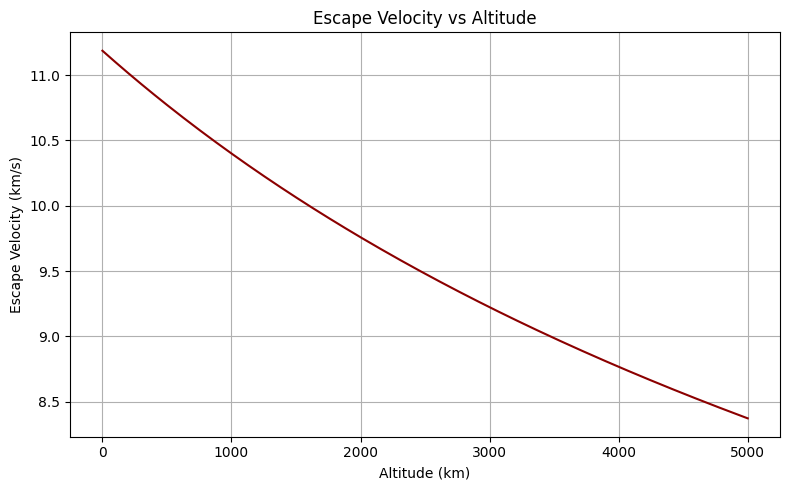
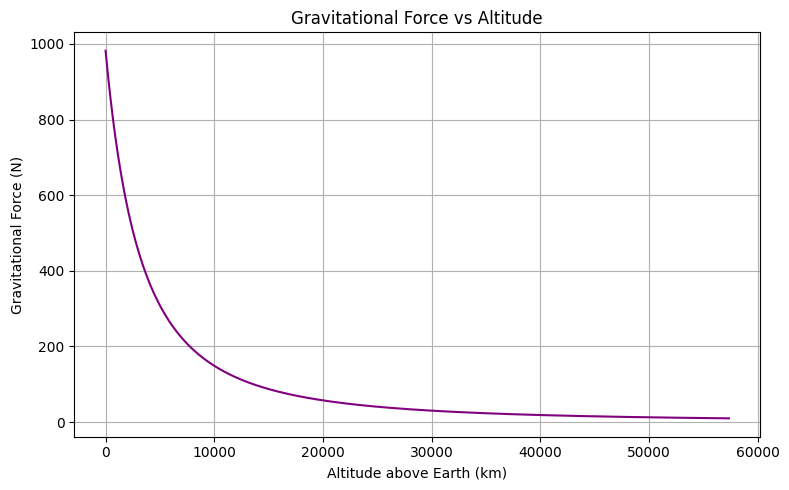
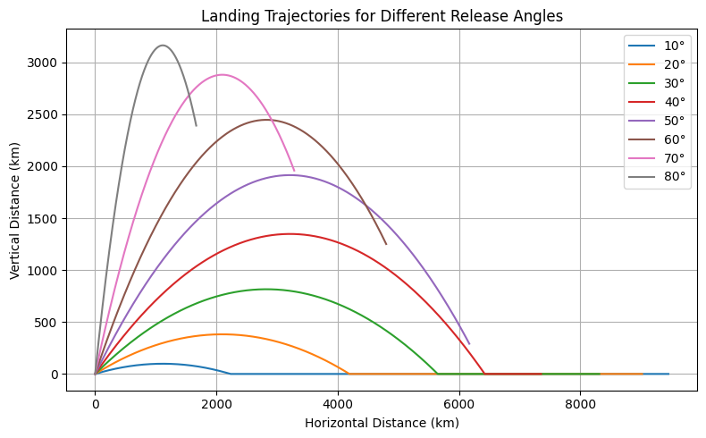

🛰️ Problem 3: Trajectories of a Freely Released Payload Near Earth
🚀 Motivation
When an object is released from a moving rocket near Earth, its trajectory is influenced by both the initial velocity and Earth's gravitational pull. This problem blends the concepts of orbital mechanics and numerical simulations. Understanding such motion is crucial for:
- Deploying payloads into orbit
- Reentry maneuvers
- Planning escape missions from Earth’s gravity
🎯 Task Overview
1. Analyze Possible Trajectories
 
- Elliptical orbit: If the object’s speed is below escape velocity and properly directed.
- Parabolic path: When velocity equals escape velocity.
- Hyperbolic escape: If speed exceeds escape velocity.
- Sub-orbital: If speed is insufficient to maintain orbit (returns to Earth).
2. Numerical Simulation
 - Simulate payload motion with varying: - Initial velocities - Launch directions - Altitudes - Implement Newton’s Law of Gravitation to calculate acceleration and path.
3. Applications
- Orbital insertion (e.g., satellites)
- Safe reentry paths
- Mission planning for interplanetary travel
📐 Theoretical Background

Newton’s Law of Gravitation:
\[
F = G \frac{M m}{r^2}
\]
Newton’s Second Law:
\[
F = m a \Rightarrow a = \frac{F}{m}
\]
Combined: $$ \vec{a} = - \frac{GM}{r^2} \hat{r} $$
Where: - \( G = 6.67430 \times 10^{-11} \, \text{m}^3/\text{kg}/\text{s}^2 \) - \( M = 5.972 \times 10^{24} \, \text{kg} \) (Earth’s mass) - \( r \) is the distance from Earth’s center to the payload
🧮 Simulation Plan
- Step 1: Define gravitational parameters and initial conditions
- Step 2: Implement time integration (e.g., Euler or RK4)
- Step 3: Plot trajectories for:
- Sub-orbital speed
- Circular orbital speed
- Escape velocity
- Hyperbolic (greater than escape) speed

📦 Deliverables
- ✅ Python simulation code in Colab
- ✅ Visual comparison of different trajectories
- ✅ Explanation of each motion case
- ✅ Discussion on how results relate to real-world applications
📌 Notes & Considerations
- Simulations assume 2D plane and point-mass gravity.
- Atmospheric drag and Earth’s rotation are ignored in the first version.
- Future extensions:
- Include atmospheric resistance
- Model reentry heating effects
- Consider n-body scenarios